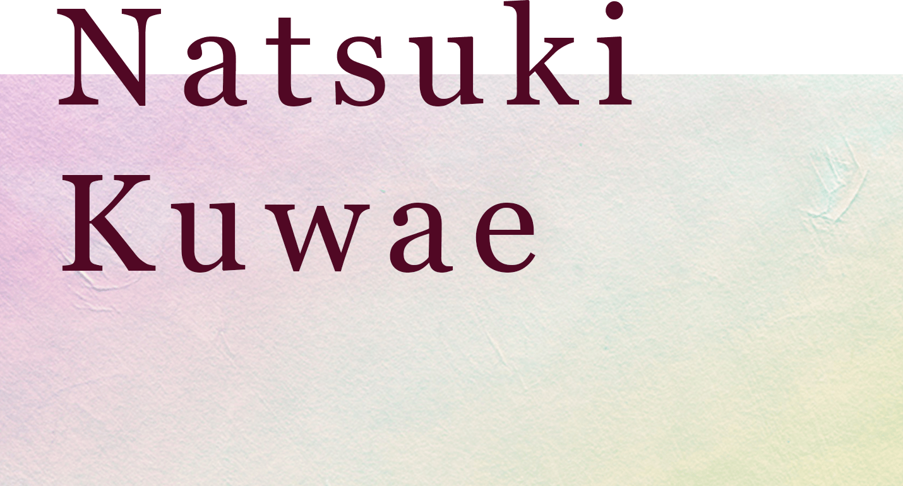
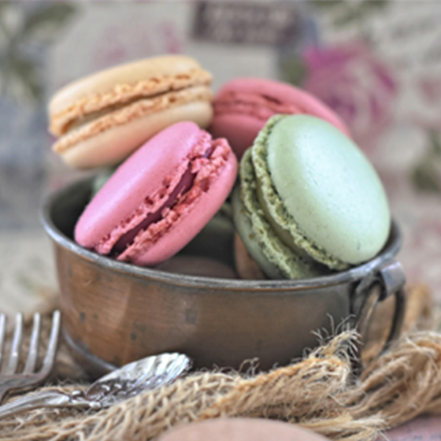
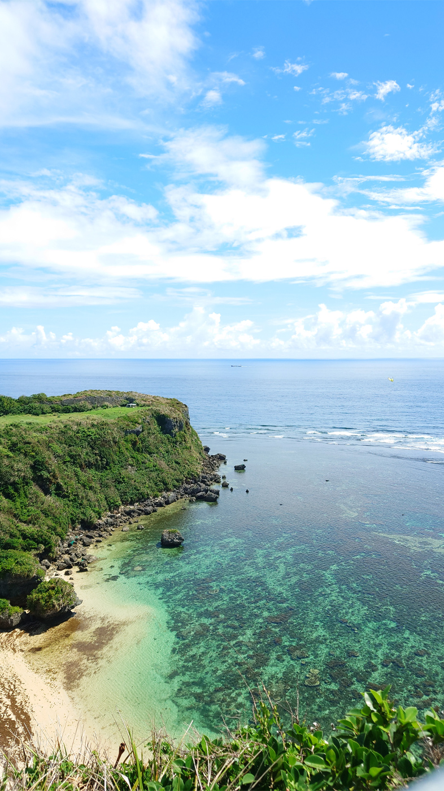
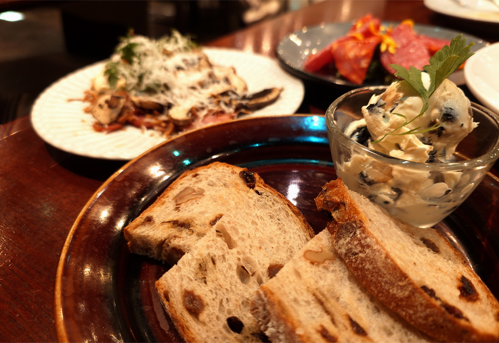

Welcome to my portfolio site
Works
Skills
HTML/CSS ★★★★★
HTMLでのコーディング、CSSでのカラー変更やflexboxを用いた配置変更、transitionでの簡単なアニメーションの設定が可能です。
Javascript/jQuery ★★★☆☆
jQueryを用いてスライドショー等の実装ができます。javascriptでのスクロールイベントやクラスの付与等は自力で設定できるよう学習中になります。現在は既に組まれているプログラムを見ておおよそ意味が理解できるレベルです。

Photoshop ★★★★★
デザインカンプの作成や使用する写真の加工はPhotoshopで作成しております。基本的な操作は問題ございません。

Illustrator ★★★☆☆
パスの描画やオブジェクトの変形など基本的な操作は可能です。
Profile
桑江 那月
KUWAE NATSUKI
ポートフォリオをご覧頂きありがとうございます。
東京都在住。30歳。
これまで販売職やIT企業でのアシスタント業務を経験し、人の声に耳を傾ける力、状況に応じて柔軟に対応する力を培ってきました。販売職ではお客様一人ひとりのご要望に合わせた提案を行い、コミュニケーション能力を習得。IT企業では、フルリモートでアプリ設定やWebマーケティング施策の補助を担当し、正確な情報伝達と自己管理の大切さを学びました。
昨年11月からはインターネット・アカデミーにてHTML/CSS、JavaScript（jQuery）、Photoshop、Illustrator などのWeb制作に必要な基礎スキルとPythonを用いたAIプログラミングについて学んできました。現在は転職活動をしながら独学にてjavascriptのさらなる活用方法やReactを学習中です。
今後も学んだ内容を活かし、「ユーザーにとって使いやすいデザイン」や「情報をわかりやすく届ける仕組みづくり」を意識した制作に取り組んでいきたいと考えています。
東京都在住。30歳。
これまで販売職やIT企業でのアシスタント業務を経験し、人の声に耳を傾ける力、状況に応じて柔軟に対応する力を培ってきました。販売職ではお客様一人ひとりのご要望に合わせた提案を行い、コミュニケーション能力を習得。IT企業では、フルリモートでアプリ設定やWebマーケティング施策の補助を担当し、正確な情報伝達と自己管理の大切さを学びました。
昨年11月からはインターネット・アカデミーにてHTML/CSS、JavaScript（jQuery）、Photoshop、Illustrator などのWeb制作に必要な基礎スキルとPythonを用いたAIプログラミングについて学んできました。現在は転職活動をしながら独学にてjavascriptのさらなる活用方法やReactを学習中です。
今後も学んだ内容を活かし、「ユーザーにとって使いやすいデザイン」や「情報をわかりやすく届ける仕組みづくり」を意識した制作に取り組んでいきたいと考えています。
わたしのすきなこと
・オンラインゲーム
仕事後は毎日オンラインゲームをやっています。
仲間と協力しながら目標達成を目指したり、時には仲間と対戦したり人と関わりながら楽しめるゲームが好きです。
・カフェ、ダイニングバー巡り
お酒が好きで休日は旦那や友人とお洒落なお店に飲みに出かけることもあります。お出かけ先での料理や綺麗な景色を写真に撮ることも好きです。
スマホで撮った写真を切り抜きや色調補正で自分なりに仕上げ、SNSにアップすることもあります。そうした「見せ方」や「表現の工夫」も、Web制作に取り組む際の発想や表現力につながっていると感じています。
こちらの写真は私が撮影し編集した写真です。
仕事後は毎日オンラインゲームをやっています。
仲間と協力しながら目標達成を目指したり、時には仲間と対戦したり人と関わりながら楽しめるゲームが好きです。
・カフェ、ダイニングバー巡り
お酒が好きで休日は旦那や友人とお洒落なお店に飲みに出かけることもあります。お出かけ先での料理や綺麗な景色を写真に撮ることも好きです。
スマホで撮った写真を切り抜きや色調補正で自分なりに仕上げ、SNSにアップすることもあります。そうした「見せ方」や「表現の工夫」も、Web制作に取り組む際の発想や表現力につながっていると感じています。
こちらの写真は私が撮影し編集した写真です。


Contact
お仕事のご依頼などございましたらお気軽にご相談ください。